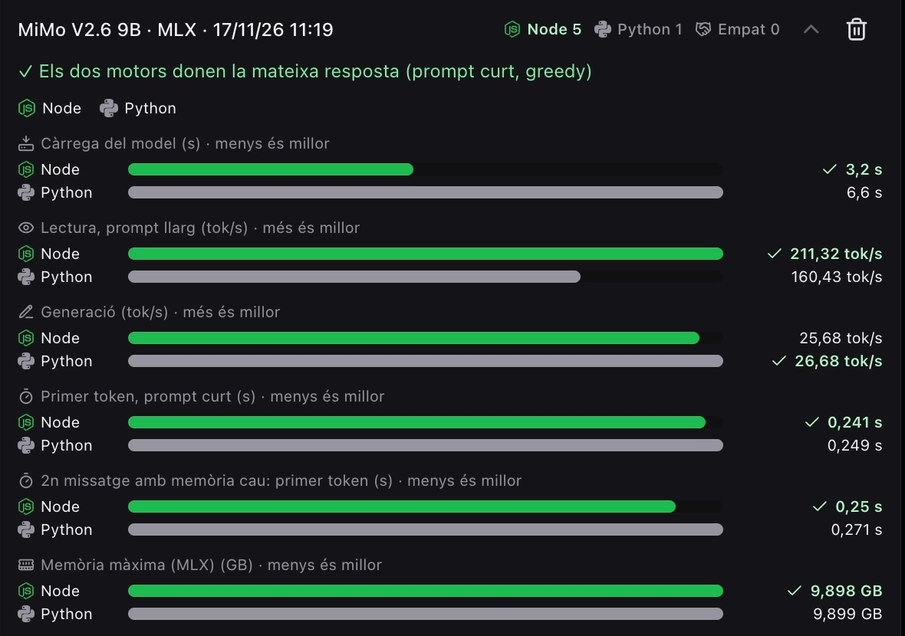

The JavaScript side of mlx-lm: the model's tokenizer and chat template, streaming answers, and LoRA training on your own conversations, all on the native mlx-node engine.
npm install @celticopetit/node-mlx-lmIn one Node.js process, with the same results as the Python reference.
The model's own tokenizer and Jinja chat template, with tools and template variables, rendered like transformers.
Text pieces as they are generated, greedy or sampled. Greedy output is token-for-token identical to mlx_lm.
The next message of a conversation only processes what is new.
Same data handling, loss, optimizer and adapter files as mlx_lm lora. The adapters load in both.
Point it at a model folder in mlx-community format and stream the answer. Run it in its own process (a child process or an Electron utilityProcess) so your UI never waits on the GPU.
const { ChatModel } = require('@celticopetit/node-mlx-lm'); const chat = new ChatModel('./MiMo-V2.6-9B-4bit'); const messages = [ { role: 'user', content: 'Sum a list in JS' }, ]; for (const piece of chat.stream(messages)) { process.stdout.write(piece); } chat.model.close(); // frees the GPU memory
const fs = require('node:fs'); const { ChatModel, trainLora } = require('@celticopetit/node-mlx-lm'); const chat = new ChatModel('./MiMo-V2.6-9B-4bit'); const examples = fs.readFileSync('train.jsonl', 'utf8') .split('\n').filter(Boolean).map(JSON.parse); await trainLora(chat, examples, { adapterPath: './adapters', iters: 100, learningRate: 1e-5, numLayers: 8, maskPrompt: true, gradCheckpoint: true, onReport: (r) => console.log(r), }); chat.model.loadAdapters('./adapters');
LoRA training like mlx_lm lora, from JavaScript. The adapters it writes load here and in mlx_lm, and adapters from mlx_lm load here.
{"messages": [{"role": "user", …}, {"role": "assistant", …}]}MiMo V2.6 9B 4-bit on the same Apple Silicon Mac. Each engine loads the same model in turn: node-mlx-lm on mlx-node against mlx_lm in Python. Median of 3 rounds, measured with the engine benchmark of the Agentic Coder app.

| Hardware | Apple Silicon Mac (M1 and later) |
| System | macOS 14 or later |
| Node.js | 20 or later |
| Models | Qwen 3.5 text models in mlx-community format, e.g. MiMo V2.6 9B 4-bit |
| Linux, Windows | Planned, as new engines under the same API |
Tested on a tiny random model against the Python reference.
Tokens and rendered chats match transformers.
Same adapters as mlx_lm lora.